Analysis, construction, and a failure mode the model did not predict.
The team was given a base bridge design to analyze and iterate. The work combined material handling, beam structural analysis, geometry decisions, and construction planning.
Python code accepted geometry inputs and simulated the train moving along the bridge to compare predicted failure loads. Three hand calculations were then used to check the code outputs before the team committed to fabrication.
The bridge was cut from the provided matboard, assembled with the provided glue, allowed to cure, and physically tested. The sources conflict on the exact cure duration, so no duration is asserted here.
CIV102StructuresTesting
Prediction vs. physical result
The strongest lesson was the mismatch.
Base-design prediction240 N
Calculated predicted failure load for Design 0.
Final-design prediction869.5 N
Calculated minimum predicted failure load after four documented iterations—not a measured test load.
Observed failure modeSplice / glue connection
The calculations predicted flexural-compression failure, but the physical bridge failed at the splice. The measured failure load is not available.
Item
Value
Evidence type
Qualification
Load Case 1
400 N, three-car train
Required load case
Requirement, not a measured result
Load Case 2
452 N over 1200 mm
Required load case
Requirement, not a measured result
Final design
869.5 N
Calculated prediction
Minimum predicted failure load
Physical test
Measured load unavailable
Observed failure location
Splice / glue rather than predicted flexural compression
Pictures
Screens & details
Click any tile to open a larger view.
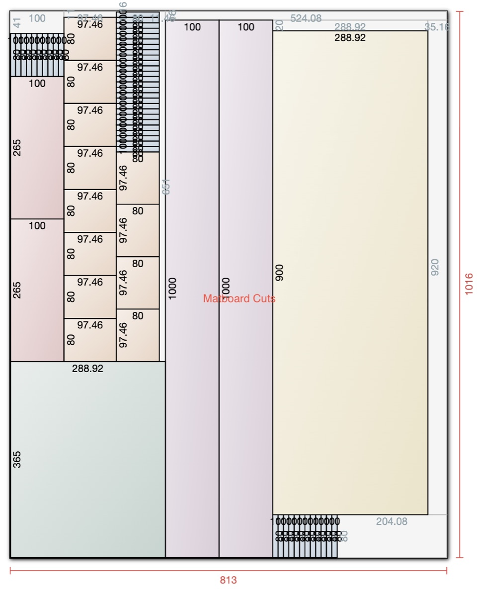
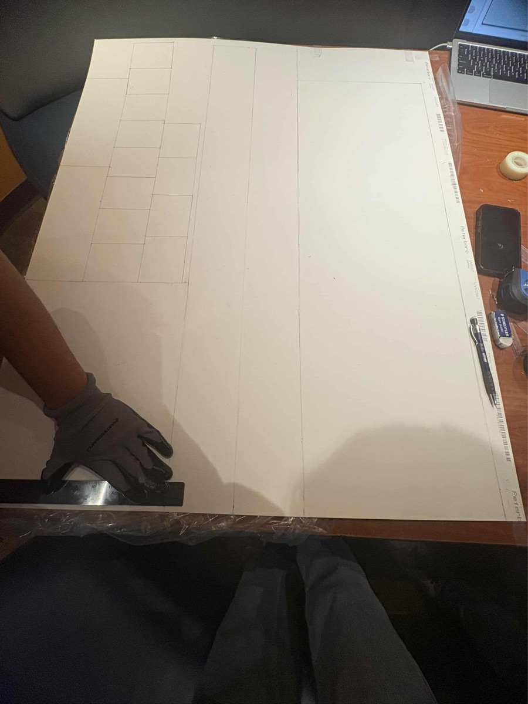
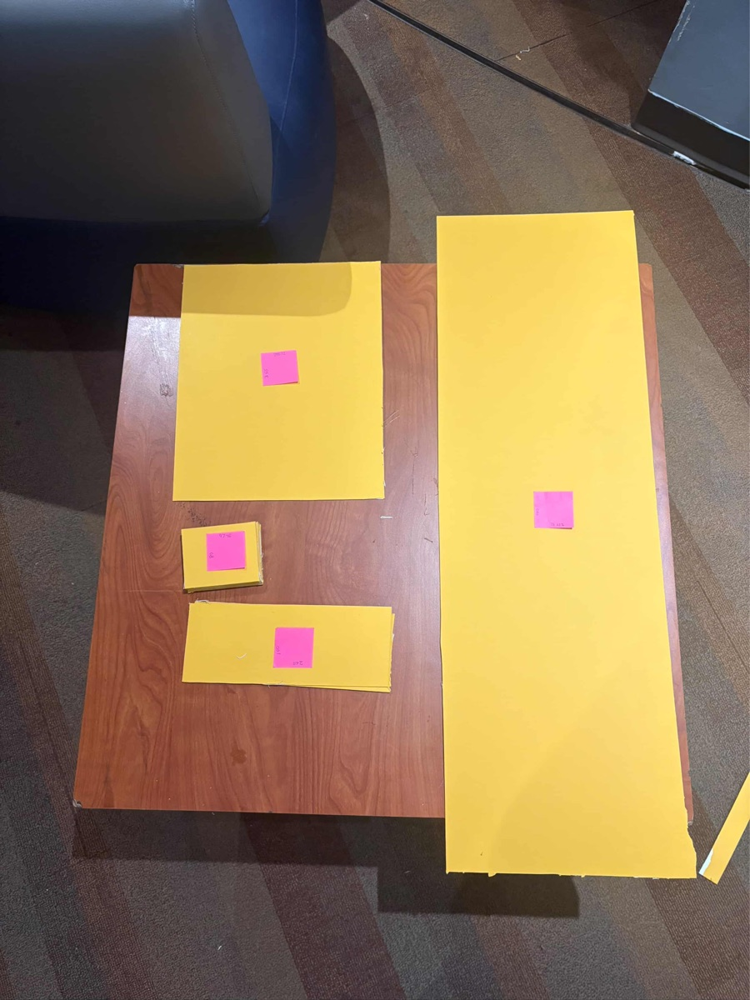
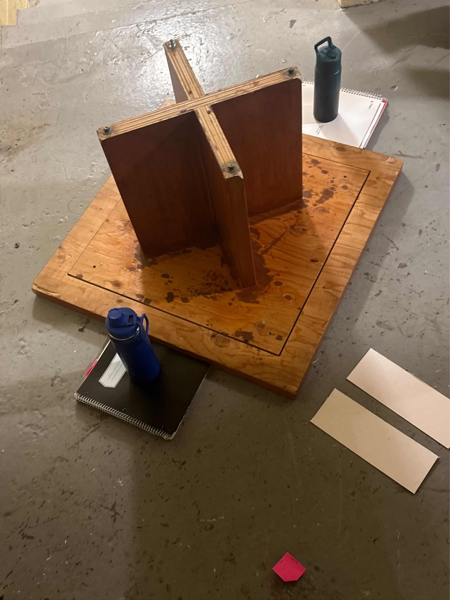
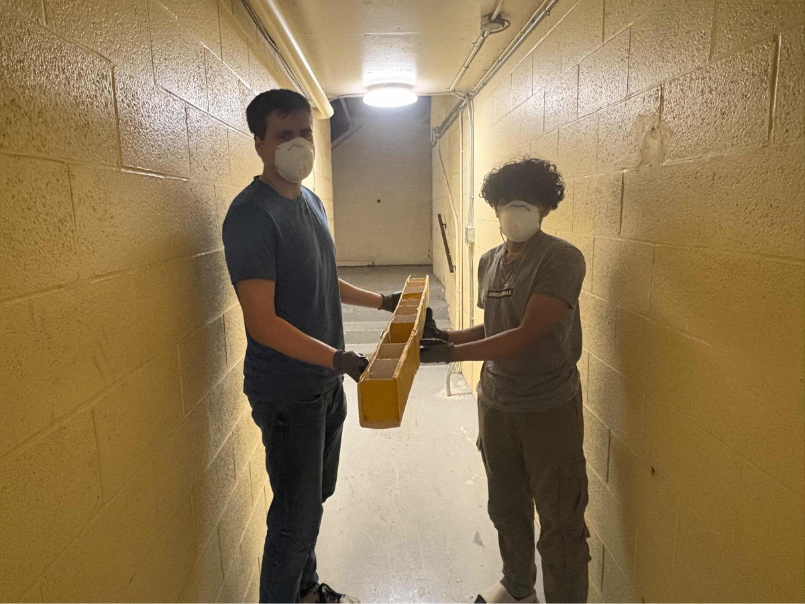
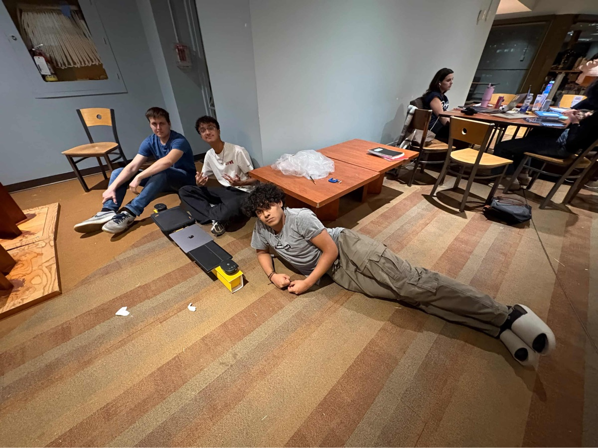
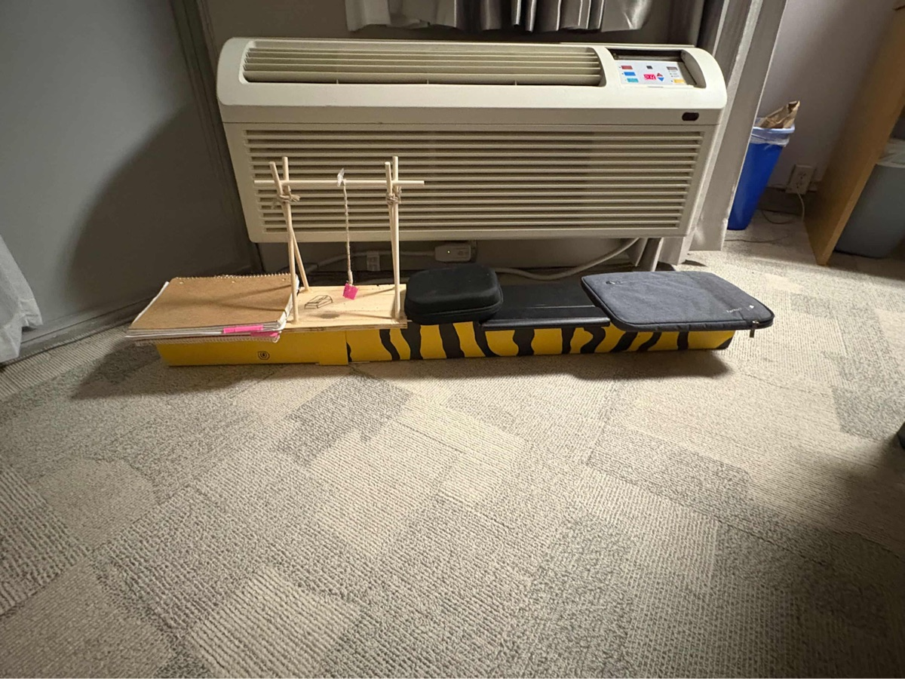
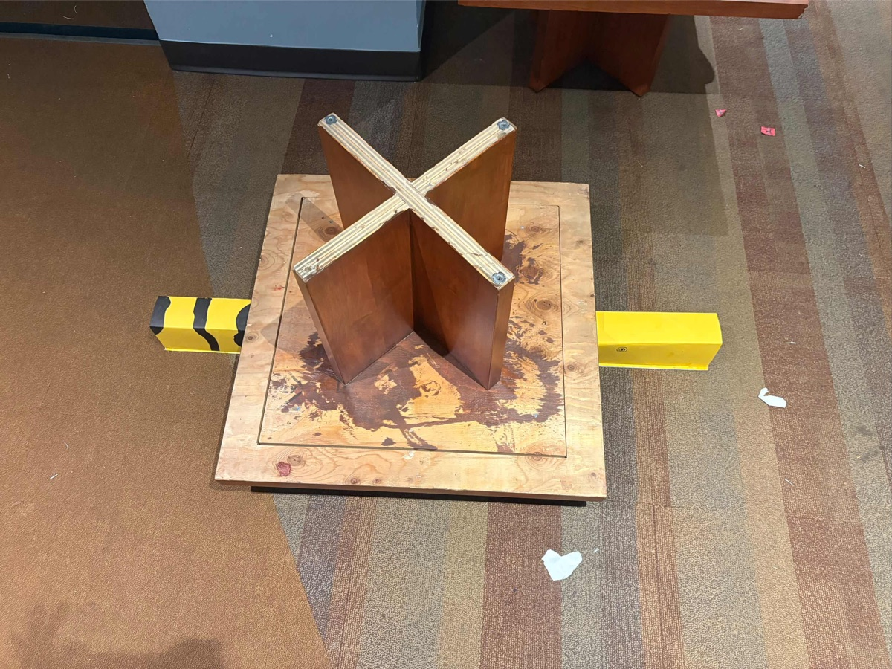
Annotated process
Three CTMFs that best explain the bridge process
For the bridge page, the three clearest CTMFs are the ones that define the
structural problem, widen the geometry options, and justify the final design through
analysis. Open each widget for the full annotated discussion.
Click any CTMF card to open the full annotated review, figures, and assessment.
Position statement reflection
How this project contributed to my position on engineering design
Planning and diligence
The project required careful planning and execution as there was only one chance
at the testing stage. We had to check our calculations, manage construction quality, and consider the conditions represented in the analysis. This
connects to my statements about the importance of thorough preparation and validation in engineering design.
CTMF detail
CTMF 04
Code for rapid iterations
Python scripts were used to compare bridge alternatives and identify a preferred design under the model.
Explanation of the CTMF
To automate the process of calculations, and to be able to rapidly iterate on the designs of the
different bridges, we created a Python script that accepts the bridge dimensions and configuration,
performs the required calculations, and outputs performance graphs for rapid comparison.
How it appeared in the project
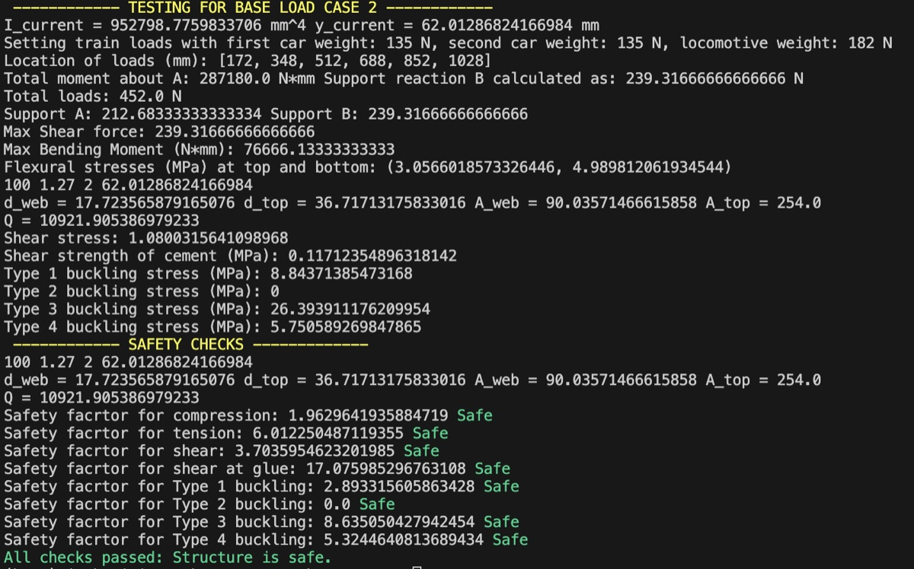
Code was used to automate the calculations and generate performance graphs for each design.
It calculated safety factors from the supplied geometry and material inputs and returned predicted failure loads for comparison.
Why it was useful
The code reduced repetitive calculation and allowed the team to compare designs rapidly. Because it was not certified, its outputs still required independent manual checks.
Why it fits my position statement
Using code alongside manual checks supported due diligence by making assumptions and outputs easier to compare without treating automation as proof of correctness.
CTMF 05
Prototype by calculations
This CTMF uses calculations to estimate predicted performance and compare design alternatives.
Explanation of the CTMF
Analytical models can represent a design before fabrication and make alternatives easier to compare.
Here, calculations estimated predicted failure loads and safety factors under the stated assumptions.
Three hand calculations independently checked selected script outputs, but neither the model nor those
checks established the constructed bridge’s actual performance.
How it appeared in the project
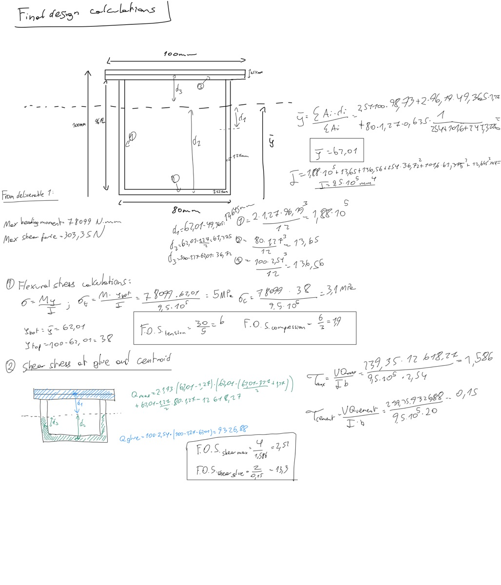
The code supported rapid development and divergence, but it was not certified to provide final results. The team conducted three manual calculations to check the outputs before building. This reduced uncertainty without proving that every failure mode or construction risk had been captured.
Why it fits my position statement
This CTMF fits my position statement because it emphasizes verification in the design process. Manual calculations alongside automated tools provided an independent check before moving forward, which supports due diligence while preserving the limits of the analysis.
CTMF 06
Failure analysis
This CTMF combines convergence and research to understand the failure points of
past designs with the goal of improving them.
Explanation of the CTMF
This consists of developing prototypes that can be tested to failure, revealing how they behave
under real-world conditions and loads beyond their intended use. Destructive testing can identify
failure modes that are difficult to predict from analysis alone.
When it can be performed safely and responsibly, this is an important step in engineering design.
How it appeared in the project
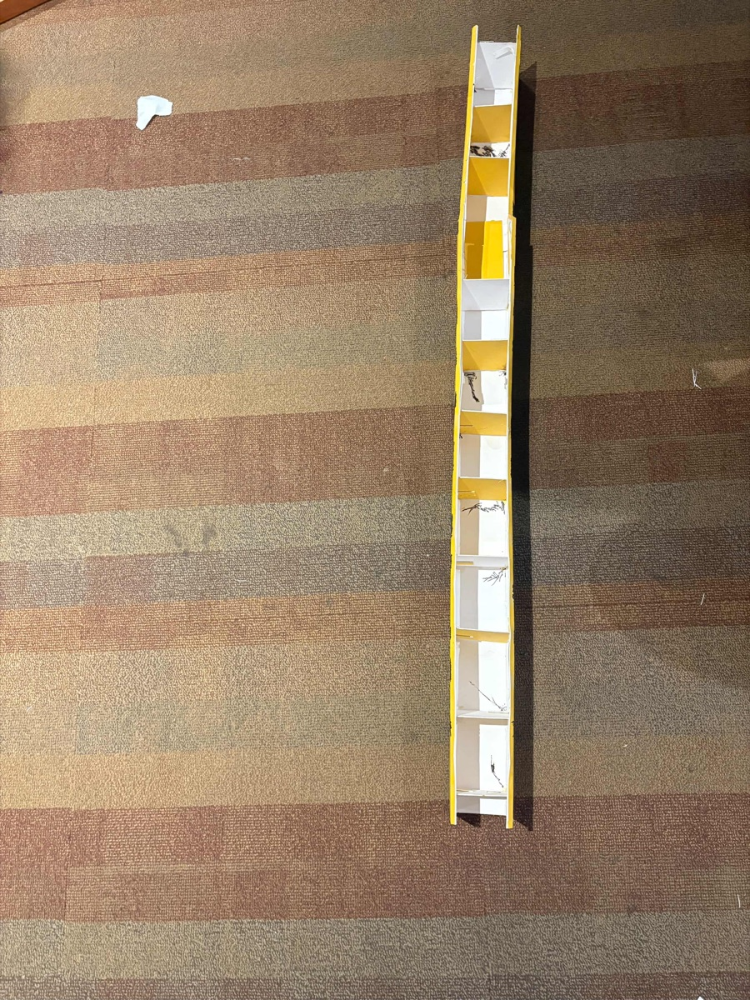
After concept selection, analysis, and fabrication, the bridge was tested under a moving train load.
As the load moved, its distribution and the resulting internal forces changed along the span.
The constructed bridge ultimately failed at the splice location.
Why it was useful
The post-test analysis identified a mismatch between the analytical prediction and the physical failure. The calculations predicted flexural-compression failure, while the built bridge failed at the splice/glue connection. The result showed that construction details can govern performance even when the idealized structural model indicates another mode.
Why it fits my position statement
This CTMF connects to my position statement by emphasizing the importance of rigorous testing and analysis in engineering design. It shows why theoretical calculations should be compared with physical evidence: unexpected construction-related failure modes can remain outside the model.